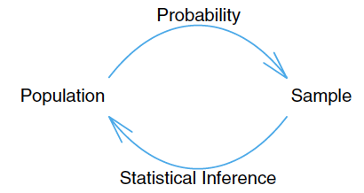
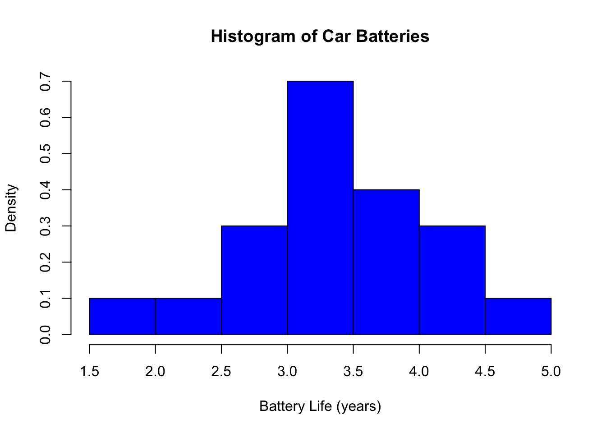
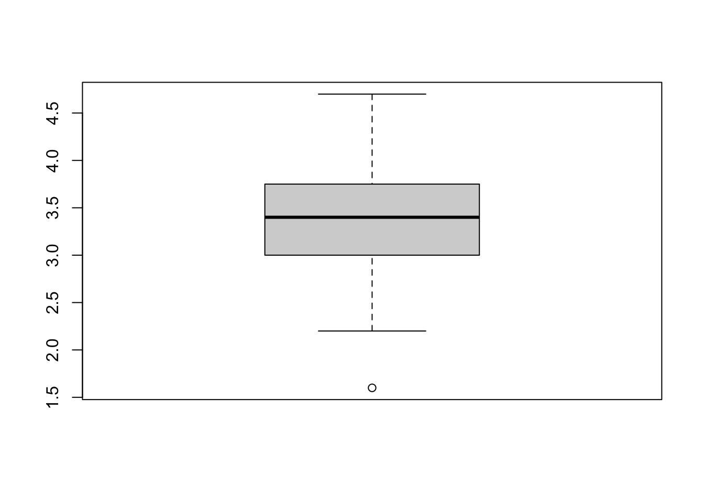
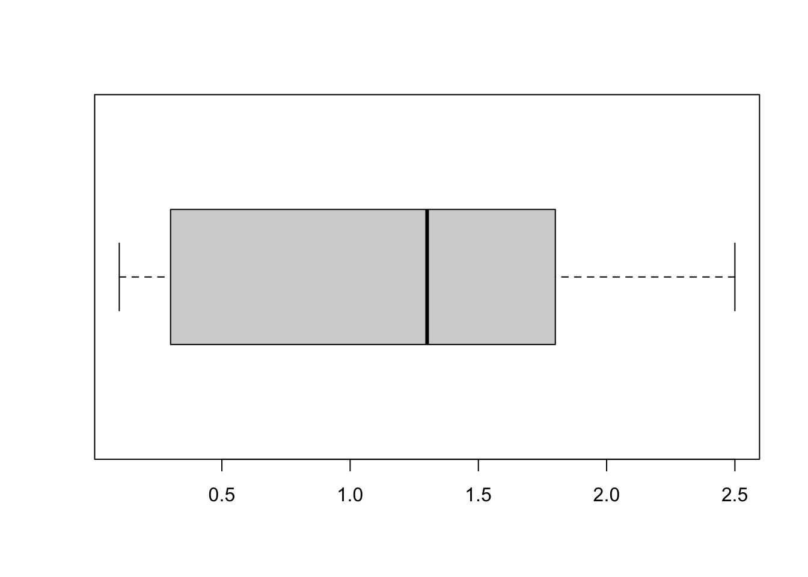
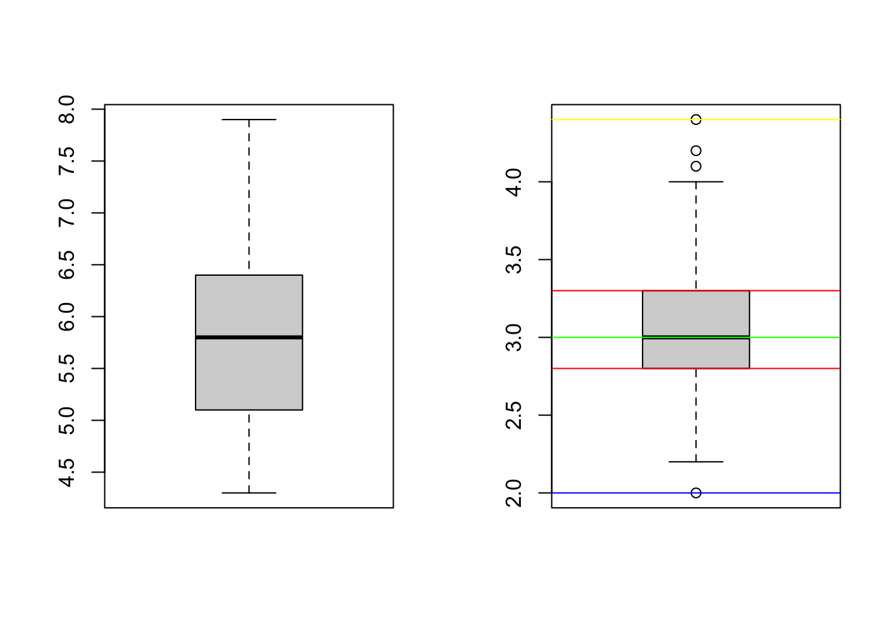

Week 2:Introduction to Statistics and Descriptive Statistics
References
- Probability & Statistics for Engineers & Scientist, 9th Edition, Ronald E. Walpole, Raymond H. Myers, Sharon L. Myers, Keying Ye, Prentice Hall
Objectives:
Understand the difference between Population and Sample
Know how to compute Sample Mean , Sample Median, and Sample Variance; How to interpret these measures
Know how to create a histogram and boxplot in R; Understand the interpretation of these two plots
Introduction to Statistics
What is statistics?
Statistics is the study of the collection, organization, analysis, and interpretation of data.
Basics of statistics:
Population: the entire group of individuals that we want information about.
Sample: a part of the population that we actually examine in order to gather information about the whole population.
Example:
Population: Illinois Tech students Sample: Students in our class
- Types of statistics:
Descriptive statistics: utilizes numerical and graphical methods to look for patterns in a data set, to summarize the information revealed in a data set, and to present the information in a convenient form.
Inferential statistics: use a fact about a sample to estimate the truth about the whole population.
Descriptive Statistics
General two types of data:
Qualitative data: observations that cannot be measured on a numerical scale. They can only be classified into one of a group of categories.
Example: species of fish, eye color, marital status etc.
Quantitative data: measurements that are recorded on a naturally occurring numerical scale.
Example: height of person, score of test, etc.
Numerical Methods
Consider a quantitative dataset with \(n\) observations, denoted as \(\{x_1,\cdots,x_n\}\).
Location Measures
Sample Mean: arithmetic average, denoted by \(\bar{x}\)
\[\bar{x} = \frac{x_1+\cdots+x_n}{n} = \frac{1}{n}\sum\limits_{i=1}^n x_i=\frac{1}{n}\sum x_i\]
The corresponding population parameter is population mean, denoted by \(\mu\).
- Sample median: middle number when the observations are arranged in ascending order, noted by \(\tilde{x}\)
\[\tilde{x} = \begin{cases} x_{(n+1)/2}, & \text{ if } n \text{ is odd,} \\ \frac{1}{2}(x_{n/2} + x_{n/2+1}), & \text{ if } n \text{ is even.} \end{cases} \]
Note: Median is less sensitive than mean to extremely large or small observations, which is good.
For example, a dataset \(\{-3,0,4\}\), the sample mean is \(1/3\) and the sample median is \(0\).
If the observation 4 is changed to 18, then the sample mean becomes \(5\), while the sample median stays unchanged as \(0\).
Variability Measures
Sample range: measure of variability, \(x_{\max} -x_{\min}\)
Sample variance: measure of variability, spread out, denoted by \(s^2\)
\[ s^2 = \frac{(x_1-\bar{x})^2+\cdots+(x_n-\bar{x})^2}{n-1} = \frac{\sum\limits_{i=1}^n (x_i-\bar{x})^2}{n-1} \]
The corresponding population parameter is population variance, denoted as $\sigma^2$.Sample standard deviation: \(s = \sqrt{s^2}\), common way for measuring how far observations are away from the mean.
The corresponding population parameter is the population standard deviation, denoted as \(\sigma\).
Example 1. Consider a tiny data set with three observations 5, 0, and 1. Find the sample mean, sample median, sample variance, and sample standard deviation.
\(\bar{x} = (0+1+5)/3 = 2\), \(\tilde{x} = 1\),
\[s^2 = \frac{1}{3-1}\left[(0-2)^2+(1-2)^2 +(5-2)^2\right] = \frac{4+1+9}{3-1} = 7,\qquad s = \sqrt{7}.\]
In-class exercise: Sample Mean, Median, and Variance
Consider a tiny data set with four observations 4, 2, -1 and 5. Find the sample mean, sample median, sample variance, and sample standard deviation.
Question How to use R find the sample mean, sample median, and sample variance?
Let’s check a very small dataset iris, which comes with the default installation of R. To check the sample mean and sample median of the data, just type summary(iris).
# Generate mean, median, percentile for numeric attributes and frequency for categorical attributes
summary(iris) Sepal.Length Sepal.Width Petal.Length Petal.Width
Min. :4.300 Min. :2.000 Min. :1.000 Min. :0.100
1st Qu.:5.100 1st Qu.:2.800 1st Qu.:1.600 1st Qu.:0.300
Median :5.800 Median :3.000 Median :4.350 Median :1.300
Mean :5.843 Mean :3.057 Mean :3.758 Mean :1.199
3rd Qu.:6.400 3rd Qu.:3.300 3rd Qu.:5.100 3rd Qu.:1.800
Max. :7.900 Max. :4.400 Max. :6.900 Max. :2.500
Species
setosa :50
versicolor:50
virginica :50
Use var to find the variance of one attribute Petal.Width.
# Generate variance for numeric attributes
var(iris$Petal.Width)[1] 0.5810063In-class exercise: Variance
- Open RStudio on your machine
- File > New File > R Markdown …
- Modify
summary(cars)in the first code block to find the variance ofSepal.Length - Click
Knit HTMLto produce an HTML file. - Save your Rmd file as
InClassEx2.Rmd
Graphical Methods
- Frequency table:
Example 2. The following is the life of 20 similar car batteries recorded to the nearest tenth of a year. The batteries are guaranteed to last \(3\) years.
\[\begin{align*} & 2.2,\ 4.1,\ 3.4,\ 4.4,\ 3.2,\ 3.7,\ 2.9,\ 2.6,\ 3.4,\ 1.6,\\ & 3.1, 3.3, 3.8, 3.1, 4.7, 3.7, 2.7, 4.3, 3.4, 3.6. \end{align*}\]
Next, we want to create a frequency table for the above data.
\[\begin{array}{ccc} \text{Interval} & \text{ Frequency} & \text{Relative Frequency} \\ [1.5,2.0)& 1 & 0.05 \\ [2.0, 2.5) & 1 & 0.05 \\ [2.5, 3.0) & 3 & 0.15\\ [3.0,3.5)& 7 & 0.35 \\ [3.5,4.0) & 4 & 0.2\\ [4.0,4.5) & 3 & 0.15\\ [4.5,5.0] & 1 & 0.05 \end{array}\]Histogram
Graphically displays the contents in the frequency table
The class intervals in the frequency table form the scale of the horizontal axis.
A vertical bar is placed over each class interval, with height equal to either the class frequency or class relative frequency.
Used to plot the density of the data
How to plot histogram in R? Use the function hist.
Histogram of Car Batteries
carBatteries <- c(2.2,4.1,3.4,4.5,3.2,3.7,2.9,2.6,3.4,1.6,
3.1, 3.3, 3.8, 3.1, 4.7, 3.7, 2.7, 4.3, 3.4, 3.6)
hist(carBatteries, breaks = seq(1.5,5.0,l=8),col = "blue",
main = "Histogram of Car Batteries",xlab="Battery Life (years)")Another Histogram of Car Batteries
What’s the difference?
hist(carBatteries, breaks = seq(1.5,5.0,l=8),col = "blue", freq =FALSE,
main = "Histogram of Car Batteries",xlab="Battery Life (years)")
In-class exercise: Histogram
- Keep working on your Rmd file
InClassEx2.Rmd - Use the
histfunction to create a histogram ofPetal.Length.
Boxplot
Graphically depicting groups of numerical data through their quantiles.
The line inside the box: median (50th percentile).
The bottom edge of the box : first quantile (Q1/25th percentile)
The top edge of the box: third quantile (Q3/75th percentile)
Interquartile range (IQR): 25th to the 75th percentile.
Bottom whisker (lower bar): from Q1 down to the minimum value within \(1.5 \times\) IQR (interquartile range).
Top whisker (upper bar): from Q3 up to the maximum value within \(1.5 \times\) IQR.
Boxplot of Car Batteries
summary(carBatteries) Min. 1st Qu. Median Mean 3rd Qu. Max.
1.600 3.050 3.400 3.365 3.725 4.700 boxplot(carBatteries)
Use the boxplot function to create a boxplot of Petal Width.
boxplot(iris$Petal.Width, horizontal = TRUE)
par(mfrow = c(1, 2)) creates a grid of size 1x2 for plots; it divides the plot area into a grid so you see several plots on the same page as opposed to separately. Try changing the 1 and the 2 to something else!
par(mfrow = c(1, 2))
boxplot(iris$Sepal.Length)
boxplot(iris$Sepal.Width)
abline(h = min(iris$Sepal.Width), col = "Blue")
abline(h = max(iris$Sepal.Width), col = "Yellow")
abline(h = median(iris$Sepal.Width), col = "Green")
abline(h = quantile(iris$Sepal.Width, c(0.25, 0.75)), col = "Red")
In-class exercise: Boxplot
Keep working on your Rmd file
InClassEx2.RmdUse the
boxplotfunction to create a boxplot ofPetal.LengthType your conclusion of outliers of
Petal.Lengthin your Rmd fileUse
par(mfrow = c(1, 2))to combine the boxplot ofPetal.LengthandPetal.Width
In-class exercise: A Comprehensive Exercise
- Add the following code block to
InClassEx2.Rmd
carBatteries<-c(
2.2,4.1,3.5, 4.5, 3.2, 3.7, 3.0, 2.6, 3.4, 1.6, 3.1, 3.3, 3.8, 3.1, 4.7, 3.7, 2.5,
4.3, 3.4, 3.6, 2.9, 3.3, 3.9, 3.1, 3.3, 3.1, 3.7, 4.4, 3.2, 4.1, 1.9, 3.4, 4.7,
3.8, 3.2, 2.6, 3.9, 3.0, 4.2, 3.5
)Find the
mean,variance,stdofcarBatteriesFind the
mean,variance,stdofcarBatterieswhencarBatteries > 3Create a
histogramofcarBatteriesCreate a
boxplotofcarBatteries